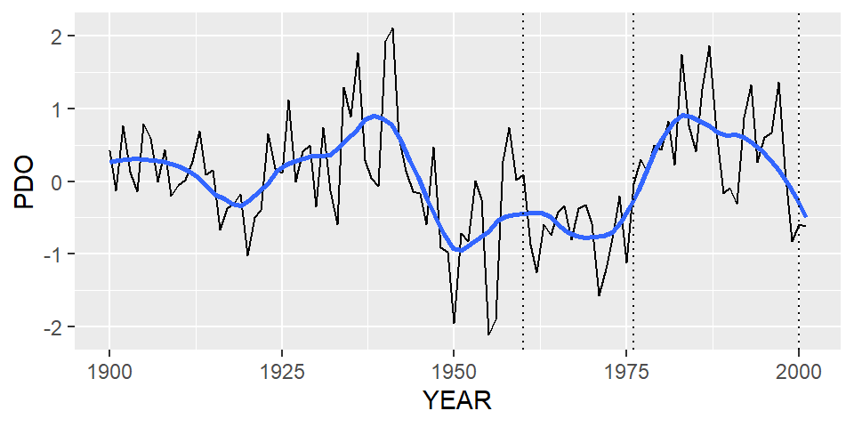
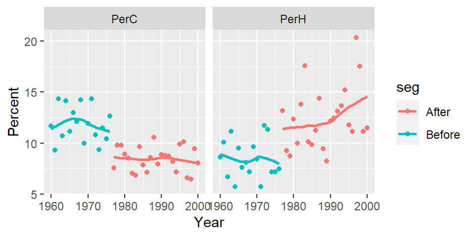

27 Slicing data
| dplyr | ggplot2 | tidyr |
|---|---|---|
| 1.0.10 | 3.4.0 | 1.3.0 |
27.1 Introduction
Let’s start off by downloading a dataset.
library(ggplot2)
df <- read.csv("http://mgimond.github.io/ES218/Data/Sample1.csv")Next, we’ll plot the data and fit a straight line.
ggplot(df, aes(x = x,y = y)) + geom_point(alpha = 0.3) +
stat_smooth(method = "lm", se = FALSE)
The line seems to do a decent job in depicting the overall trend but the relationship does not appear perfectly linear. Let’s check the residuals via a residual-dependence plot.
M1 <- lm( y ~ x, df)
df$residuals <- residuals(M1)
ggplot(df, aes(x = x, y = residuals)) + geom_point(alpha = 0.3) +
stat_smooth(method = "loess", se = FALSE, span = 0.2,
method.args = list(degree = 1))
There appears to be a dip in residual values between ~95 and ~107 followed by an increase beyond ~107. The kinks in the residuals seem to delineate three perfectly straight line segment suggesting that the raw data may be modeled using three distinct lines (i.e. with differing slopes and intercepts). Note the use of a small loess span in the above code to reveal the kinks in the pattern.
Sometimes, the data may represent outcomes from different processes given different ranges in independent (x) values. Since the residual plot seems to suggest that the kinks occur are x=95 and x=106, we’ll split the data into three groups: less than 95, between 95 and 106 and greater than 106. These groups will be labeled 1, 2, and 3 and will be assigned to a new column called grp. This new column will then be used to facet the scatter plots and associated loess curve. We’ll use of the case_when() function to perform this task.
library(dplyr)
df2 <- df %>% mutate(grp = case_when(x < 95 ~ 1,
x < 106 ~ 2,
x >= 106 ~ 3))
ggplot(df2, aes(x = x,y = y)) + geom_point(size = 0.5, alpha = 0.3) +
stat_smooth(method = "loess", se = FALSE) + facet_grid(. ~ grp)
The segmented plots seem to confirm our earlier suspicion that the data followed three separate linear processes. We can extract the slope and intercept for each segment using the following chunk of code:
library(tidyr)
df2 %>%
group_by(grp) %>%
do( M1 = (lm(y ~ x, . ) ) ) %>%
mutate(intercept = coef(M1)[1],
slope = coef(M1)[2]) %>%
select(-M1)# A tibble: 3 × 3
# Rowwise:
grp intercept slope
<dbl> <dbl> <dbl>
1 1 1.41 2.09
2 2 103. 1.04
3 3 -53.4 2.5027.2 Example
Disclaimer: the analysis presented here is only exploratory and does not mirror the complete analysis conducted by Vincent et al. nor the one conducted by Stone.
27.2.1 Original analysis
The following data are pulled from the paper titled “Observed Trends in Indices of Daily Temperature Extremes in South America 1960-2000” (Vincent et al., 2005) and represent the percentage of nights with temperatures greater than or colder than the 90th and 10th percentiles respectively within each year. The percentiles are calculated for the 1961 to 2000 period.
library(tidyr)
Year <- 1960:2000
PerC <- c(11.69,9.33,14.35,10.73,14.15,11.16,13,12.13,14.25,10.01,11.94,14.35,
10.83,9.38,11.5,10.44,12.66,7.55,9.77,9.81,8.9,8.51,7.02,6.83,9.67,
7.84,7.11,8.56,10.59,7.93,8.85,8.8,8.75,8.18,7.16,9.91,10.15,6.58,
6.44,9.43,8.03)
PerH <- c(8.62,10.1,6.67,11.13,5.71,9.48,7.63,8.12,7.2,9.64,8.42,5.71,11.72,
11.32,7.2,7.17,7.46,13.17,9.28,8.75,12.38,10,13.83,17.59,10.14,
9.84,11.23,14.39,9.44,8.26,12.15,12.45,13.14,13.67,15.22,11.79,11.16,
20.37,17.56,11.13,11.49)
df2 <- data.frame(Year, PerC, PerH)
df2.l <- pivot_longer(df2, names_to = "Temp", values_to = "Percent", -Year)Let’s plot the data and fit a straight line to the points.
ggplot(df2.l, aes(x = Year, y = Percent)) + geom_point() +
stat_smooth(method = "lm", se = FALSE) + facet_wrap(~ Temp, nrow = 1)
The plot on the left shows percent cold nights and the one on the right shows percent hot nights. At first glance, the trends seem real and monotonic.
Next we’ll fit a loess to see if the trends are indeed monotonic. To minimize the undue influence of end values in the plot, we’ll implement loess’ bisquare estimation method via the family=symmetric option. We’ll also use a small span to help identify any “kinks” in the patterns.
ggplot(df2.l, aes(x = Year, y = Percent)) + geom_point() +
stat_smooth(method = "loess", se = FALSE, span = 0.5,
method.args = list(degree = 1, family = "symmetric")) +
facet_wrap(~ Temp, nrow = 1)
The patterns seem to be segmented around the 1975-1980 period for both plots suggesting that the observed trends may not be monotonic. In fact, there appears to be a prominent kink in the percent cold data around the mid to late 1970`s. A similar, but not as prominent kink can also be observed in the percent hot data at around the same time period.
27.2.2 Changepoint
In a comment to Vincent et al.’s paper, R.J. Stone argues that the trend observed in the percent hot and cold dataset is not monotonic but segmented instead. In other words, there is an abrupt change in patterns for both datasets that make it seem as though a monotonic trend exists when in fact the data may follow relatively flat patterns for two different segments of time. He notes that the abrupt change (which he refers to as a changepoint) occurs around the 1976 and 1977 period. He suggests that this time period coincides with a change in the Pacific Decadal Oscillation (PDO) pattern. PDO refers to an ocean/atmospheric weather pattern that spans multiple decades and that is believed to impact global climate.
The following chunk of code loads the PDO data, then summarizes the data by year before plotting the resulting dataset.
df3 <- read.table("http://mgimond.github.io/ES218/Data/PDO.dat",
header = TRUE, na.strings = "-9999")
pdo <- df3 %>%
pivot_longer(names_to = "Month", values_to = "PDO", -YEAR) %>%
group_by(YEAR) %>%
summarise(PDO = median(PDO) )
ggplot(pdo, aes(x = YEAR, y = PDO)) + geom_line() +
stat_smooth(se = FALSE, span = 0.25) +
geom_vline(xintercept = c(1960, 1976, 2000), lty = 3)
The contrast in PDO indexes between the 1960-1976 period and the 1976-2000 period is obvious with the pre-1977 index values appearing to remain relatively flat over a 15 year period and with the post-1977 index appearing to show a gradual increase towards a peak around the early 1990’s.
To see if distinct patterns emerge from the percent hot and cold data before and after 1976, we’ll split the data into two segments using a cutoff year of 1976-1977. Values associated with a period prior to 1977 will be assigned a seg value of Before and those associated with a post-1977 period will be assigned a seg value of After.
df2.l$seg <- ifelse(df2.l$Year < 1977, "Before", "After")Next, we’ll plot the data across four facets:
ggplot(df2.l, aes(x = Year, y = Percent)) + geom_point() +
stat_smooth(method = "lm", se = FALSE) + facet_grid(seg ~ Temp)
We can also choose to map seg to the color aesthetics which will split the points by color with the added benefit of fitting two separate models to each batch.
ggplot(df2.l, aes(x = Year, y = Percent, col = seg)) + geom_point() +
stat_smooth(method = "lm", se=FALSE) + facet_wrap( ~ Temp, nrow = 1)
To test for “straightness” in the fits, we’ll fit a loess to the points.
ggplot(df2.l, aes(x = Year, y = Percent, col = seg)) + geom_point() +
stat_smooth(method = "loess", se = FALSE, method.args = list(degree = 1)) +
facet_wrap( ~ Temp, nrow = 1)
There is a clear “stair-step” pattern for the percent cold nights. However, there seems to be an upward trend in the percent of hot nights for the post-1977 period which could imply that in addition to the PDO effect, another process could be at play.
It should be noted that in a followup to Stone’s comment, Vincent et al. defend their analysis results. However, this little exercise highlights the ease in which an analysis can follow different (and seemingly sound) paths.
27.3 Reference
Original paper: Vincent, L. A., et al., 2005. Observed trends in indices of daily temperature extremes in South America 1960–2000. J. Climate, 18, 5011–5023.
Comment to the paper Stone, R. J., 2011. Comments on “Observed trends in indices of daily temperature extremes in South America 1960–2000.” J. Climate, 24, 2880–2883.
The reply to the comment Vincent, L. A., et al., 2011. Reply, J. Climate, 24, 2884-2887.